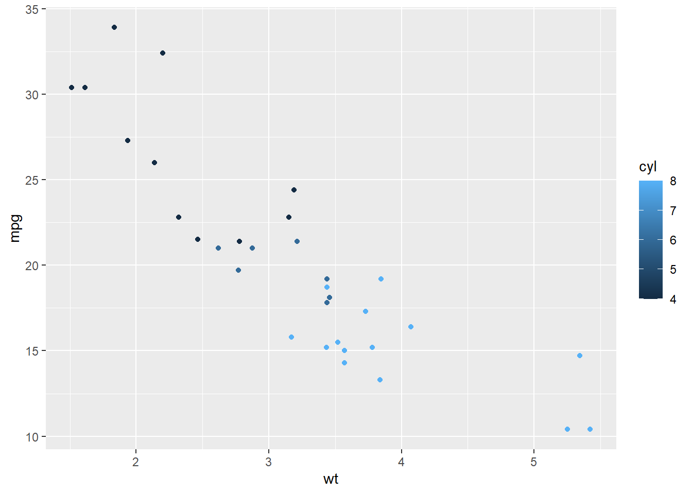
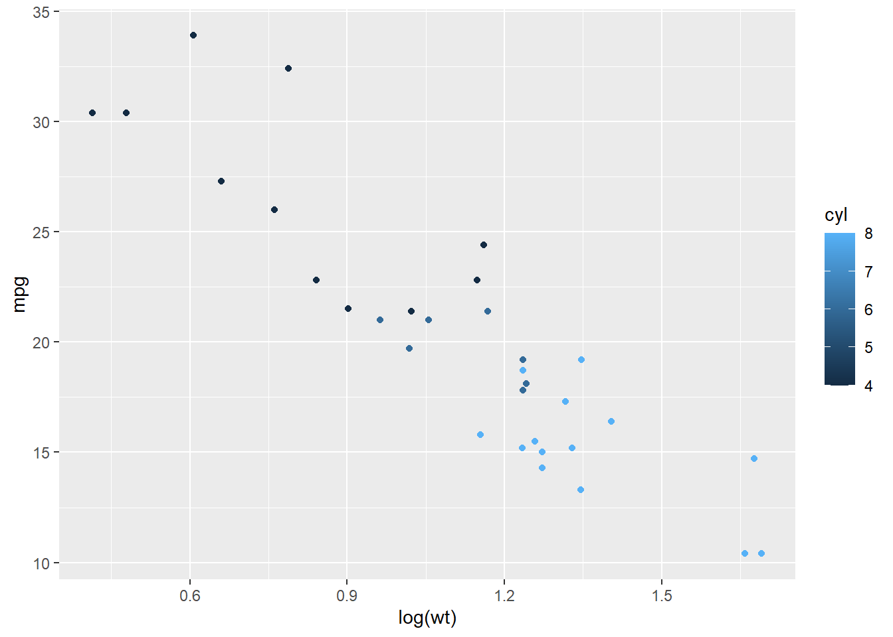
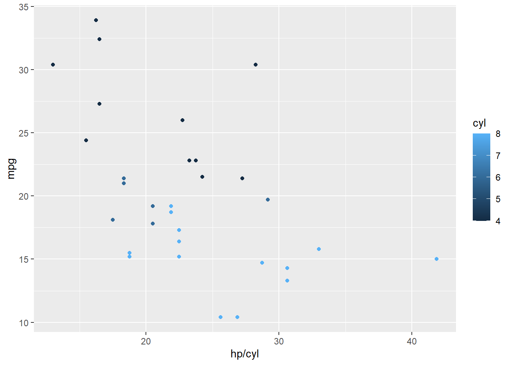

Setup
library(tidyverse)## -- Attaching packages --------------------------------------- tidyverse 1.3.0 --## v ggplot2 3.3.2 v purrr 0.3.4
## v tibble 3.0.4 v dplyr 1.0.2
## v tidyr 1.1.2 v stringr 1.4.0
## v readr 1.4.0 v forcats 0.5.0## -- Conflicts ------------------------------------------ tidyverse_conflicts() --
## x dplyr::filter() masks stats::filter()
## x dplyr::lag() masks stats::lag()Load data
mtcars_tbl <- tibble(mtcars)
mtcars_tbl## # A tibble: 32 x 11
## mpg cyl disp hp drat wt qsec vs am gear carb
## <dbl> <dbl> <dbl> <dbl> <dbl> <dbl> <dbl> <dbl> <dbl> <dbl> <dbl>
## 1 21 6 160 110 3.9 2.62 16.5 0 1 4 4
## 2 21 6 160 110 3.9 2.88 17.0 0 1 4 4
## 3 22.8 4 108 93 3.85 2.32 18.6 1 1 4 1
## 4 21.4 6 258 110 3.08 3.22 19.4 1 0 3 1
## 5 18.7 8 360 175 3.15 3.44 17.0 0 0 3 2
## 6 18.1 6 225 105 2.76 3.46 20.2 1 0 3 1
## 7 14.3 8 360 245 3.21 3.57 15.8 0 0 3 4
## 8 24.4 4 147. 62 3.69 3.19 20 1 0 4 2
## 9 22.8 4 141. 95 3.92 3.15 22.9 1 0 4 2
## 10 19.2 6 168. 123 3.92 3.44 18.3 1 0 4 4
## # ... with 22 more rows# basic scatterplot
ggplot(mtcars_tbl, aes(x = cyl, y = mpg)) + geom_point()
The x-axis is a discrete variable. The number of cylinders in a vehicle engine is always an integer (1, 2, 3…n). You will never have a car with 4.25 cylinders.
As we can see, generally, vehicles with more cylinders get worse gas mileage.
Code Explained
ggplot() calls the ggplot package and initializes a ggplot object. In the first argument you need to put the data you want to work from, mtcars_tbl. The second argument is the aesthetics layer. aes(x = cyl, y = mpg) can be written aes(cyl, mpg). The x and y are understood implicitly, but for others reading your code it helps to be as explicit as possible.
The final layer is the geom layer. This tells ggplot what type of plot to make. If you had geom_bar would make a bar plot. geom_histogram makes a histogram and so on.
Aesthetic Layer
Aesthetics describe how variables are mapped to visual properties. You can do very simple manipulations in the aesthetic layer, such as log(mpg), but if you need to do anything complicated you should do another layer and mutate() the data.
# mpg by weight, data color by cylinder
ggplot(mtcars, aes(x = wt, y = mpg, color = cyl)) + geom_point()
# a simple manipulation of the data in the aes() layer with log(wt)
ggplot(mtcars, aes(x = log(wt), y = mpg, color = cyl)) + geom_point()
You can also map aesthetics to functions of variables.
# x-axis is horsepower per cylinder
ggplot(mtcars, aes(x = hp/cyl, y = mpg, color = cyl)) + geom_point()
For most
Share this post
Twitter
Google+
Reddit
LinkedIn
StumbleUpon
Email